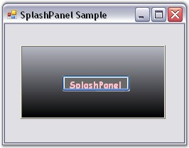

To create a SplashPanel programmatically, with a user control in it, follow the below steps.
1. Create a new Visual C# or VB.NET application in Visual Studio .NET.
2. Add the Syncfusion.Shared.Base and Syncfusion.Tools.Windows assemblies to your application.
3. Add the namespaces given below to your form.
|
[C#]
using Syncfusion.Windows.Forms.Tools; using Syncfusion.Drawing; using Syncfusion.Windows.Forms.Tools; using Syncfusion.Drawing; using System.Reflection; |
|
[VB.NET]
Imports Syncfusion.Windows.Forms.Tools Imports Syncfusion.Drawing Imports Syncfusion.Windows.Forms.Tools Imports Syncfusion.Drawing Imports System.Reflection |
4. Declare the SplashPanel and Button control.
|
[C#]
private Syncfusion.Windows.Forms.Tools.SplashPanel splashPanel1; private System.Windows.Forms.Button button1; |
|
[VB.NET]
Friend WithEvents splashPanel1 As Syncfusion.Windows.Forms.Tools.SplashPanel Friend WithEvents button1 As System.Windows.Forms.Button |
5. Initialize the controls and make it visible.
|
[C#]
this.splashPanel1 = new Syncfusion.Windows.Forms.Tools.SplashPanel(); this.button1 = new System.Windows.Forms.Button(); this.splashPanel1.SuspendLayout(); |
|
[VB.NET]
Me.splashPanel1 = New Syncfusion.Windows.Forms.Tools.SplashPanel Me.button1 = New System.Windows.Forms.Button Me.splashPanel1.SuspendLayout() |
6. Set the properties for the SplashPanel and Button control.
|
[C#]
// Set the properties for SplashPanel. this.splashPanel1.AnimationSpeed = 10; this.splashPanel1.BackgroundColor = new Syncfusion.Drawing.BrushInfo(Syncfusion.Drawing.GradientStyle.Vertical, System.Drawing.SystemColors.Highlight, System.Drawing.SystemColors.HighlightText); this.splashPanel1.Controls.Add(this.button1); this.splashPanel1.DesktopAlignment = Syncfusion.Windows.Forms.Tools.SplashAlignment.Center; this.splashPanel1.DiscreetLocation = new System.Drawing.Point(0, 0); this.splashPanel1.Font = new System.Drawing.Font("Comic Sans MS", 9.75F, System.Drawing.FontStyle.Bold, System.Drawing.GraphicsUnit.Point, ((System.Byte)(0))); this.splashPanel1.ForeColor = System.Drawing.Color.Pink; this.splashPanel1.Location = new System.Drawing.Point(16, 16); this.splashPanel1.Name = "splashPanel1"; this.splashPanel1.ShowAnimation = true; this.splashPanel1.SuspendAutoCloseWhenMouseOver = false; this.splashPanel1.TabIndex = 0; this.splashPanel1.TimerInterval = 5000;
// Set the properties for Button control. this.button1.BackColor = System.Drawing.Color.DimGray; this.button1.Location = new System.Drawing.Point(56, 40); this.button1.Name = "button1"; this.button1.Size = new System.Drawing.Size(96, 23); this.button1.TabIndex = 0; this.button1.Text = "SplashPanel";
// Add the SplashPanel to the Form. this.Controls.Add(this.splashPanel1); |
|
[VB.NET]
// Set the properties for SplashPanel. this.splashPanel1.AnimationSpeed = 10; this.splashPanel1.BackgroundColor = new Syncfusion.Drawing.BrushInfo(Syncfusion.Drawing.GradientStyle.Vertical, System.Drawing.SystemColors.Highlight, System.Drawing.SystemColors.HighlightText); this.splashPanel1.Controls.Add(this.button1); this.splashPanel1.DesktopAlignment = Syncfusion.Windows.Forms.Tools.SplashAlignment.Center; this.splashPanel1.DiscreetLocation = new System.Drawing.Point(0, 0); this.splashPanel1.Font = new System.Drawing.Font("Comic Sans MS", 9.75F, System.Drawing.FontStyle.Bold, System.Drawing.GraphicsUnit.Point, ((System.Byte)(0))); this.splashPanel1.ForeColor = System.Drawing.Color.Pink; this.splashPanel1.Location = new System.Drawing.Point(16, 16); this.splashPanel1.Name = "splashPanel1"; this.splashPanel1.ShowAnimation = true; this.splashPanel1.SuspendAutoCloseWhenMouseOver = false; this.splashPanel1.TabIndex = 0; this.splashPanel1.TimerInterval = 5000;
// Set the properties for Button control. this.button1.BackColor = System.Drawing.Color.DimGray; this.button1.Location = new System.Drawing.Point(56, 40); this.button1.Name = "button1"; this.button1.Size = new System.Drawing.Size(96, 23); this.button1.TabIndex = 0; this.button1.Text = "SplashPanel";
// Add the SplashPanel to the Form. this.Controls.Add(this.splashPanel1); |
7. Call and define the ShowSplash() method as follows.
|
[C#]
// In the Form properties, add the below code before resuming the layout. this.ShowSplash(false);
// Define the ShowSplash() method. private void ShowSplash(bool isModal) { Point pt = Point.Empty; SplashPanel currentPanel = this.splashPanel1; int interval = 5000; currentPanel = this.splashPanel1; if(currentPanel.DesktopAlignment == SplashAlignment.Custom) pt = Control.MousePosition; currentPanel.ShowSplash(pt, this, isModal); } |
|
[VB.NET]
' In the Form properties, add the below code before resuming the layout. Me.ShowSplash(False)
' Define the ShowSplash() method. Private Sub ShowSplash(ByVal isModal As Boolean) Dim pt As Point = Point.Empty Dim currentPanel As SplashPanel = Me.SplashPanel1 Dim interval As Integer = 5000 currentPanel = Me.SplashPanel1 currentPanel.TimerInterval = interval If currentPanel.DesktopAlignment = SplashAlignment.Custom Then pt = Control.MousePosition End If currentPanel.ShowSplash(pt, Me, isModal) End Sub |
8. Run the application.

Figure 997: SplashPanel Control with a User Input Child Button Control
See Also